Confira aqui uma lista com os melhores jogos para XBOX ONE/SERIE X:
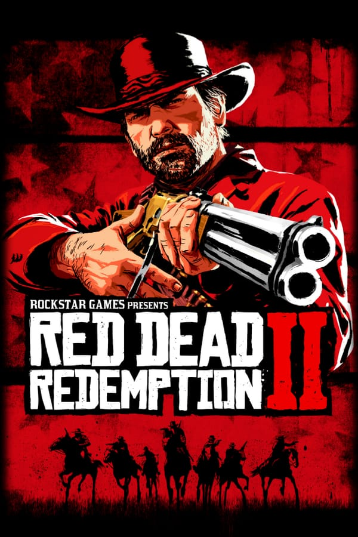
RED DEAD REMDEMPTION
Gênero: Ação e aventura.
Modos de jogo: Um jogador.
Lançamento: Maio de 2010.
Desenvolvedor: Rockstar San Diego.
Descrição de jogo:
John Marston é um fora de lei que se vê obrigado a trabalhar para um Escritório de Investigação, pois agentes federais sequestraram sua família, e para salvá-los terá de seguir as ordens e exigências dos federais.
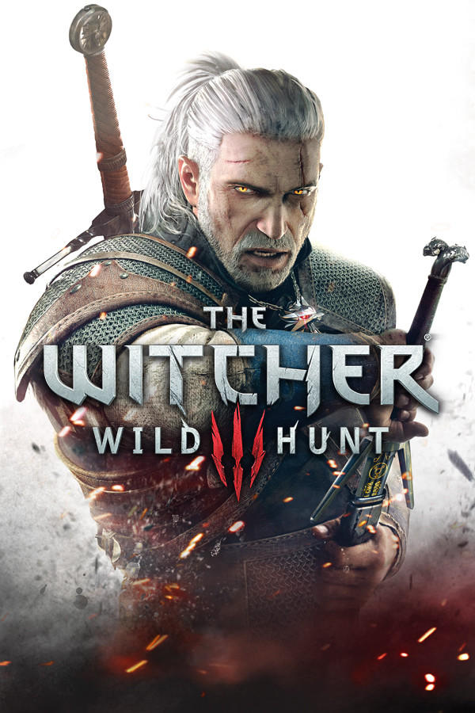
THE WITCHER 3
Gênero: RPG de ação.
Modos de jogo: Um jogador.
Lançamento: Maio de 2015.
Desenvolvedor: CD Projekt, CD Projekt RED.
Descrição de jogo:
Em um unverso repleto de mistério magia e criaturas horrendas o bruxo Geralt de Rívia deve enfrentar monstros e se aprimorar cada vez mais até cumprir seu objetivo.
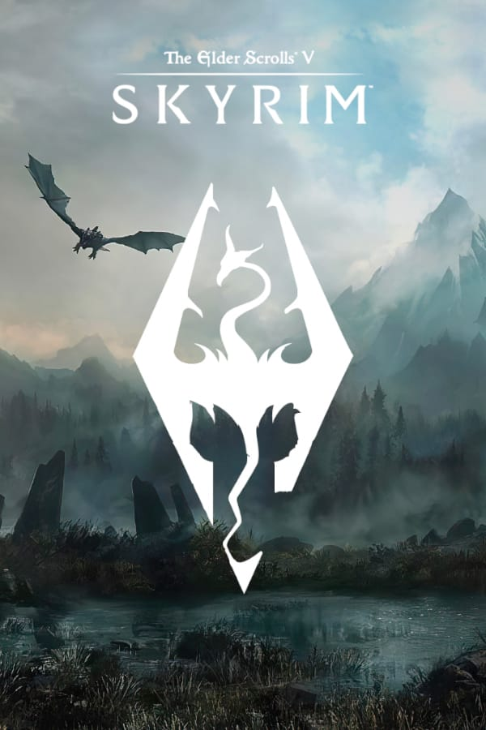
SKYRIM
Gênero: RPG de ação.
Modos de jogo: Um jogador.
Lançamento: Novembro de 2011.
Desenvolvedor: Bethesda Game Studios.
Descrição de jogo
Em um mundo repleto de magia, mistério e criaturas sombrias a terra é aterrorizada por dragões, e se algo não for feito eles irão aterrorizar para sempre o mundo.
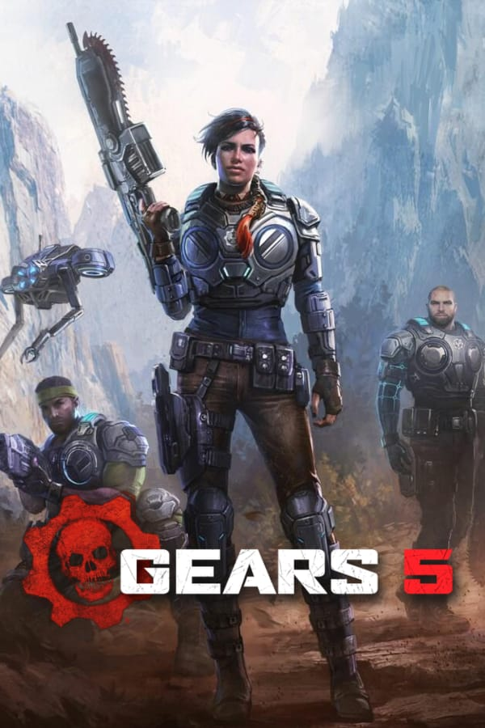
GEARS OF WAR 5
Gênero: Tiro em Terceira pessoa.
Modos de jogo: Multijogador/on-line.
Lançamento: Setembro de 2019.
Desenvolvedor: The Coalition.
Descrição de jogo:
Kait Diaz que vem de descendência Locust não conhece sua origem ou a origem de sua família, então ela parte em uma jornada em busca de respostas enfrentando todo tipo de perigos ao longa de sua jornada.
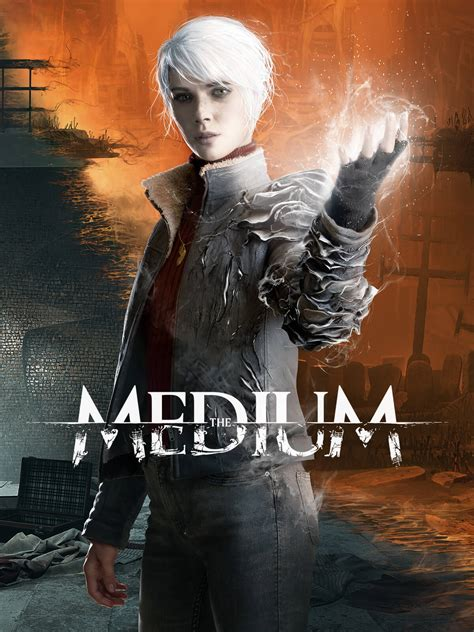
THE MEDIUM
Gênero: Suspense e terror.
Modos de jogo: Um jogador.
Lançamento: Jneiro de 2021.
Desenvolvedor: Bloober Team.
Descrição de jogo:
Com a morte de seu pai adotivo Marianne se vê perdida, sem respostas e sem lembranças de seu passado e com o incrível dom de ver e falar com os mortos, quando já não tinha mais esperanças misteriosamente seu passado veio até ela, e ela terá de desvendar as pistas e enfrentar perigos para descobrir sua história.
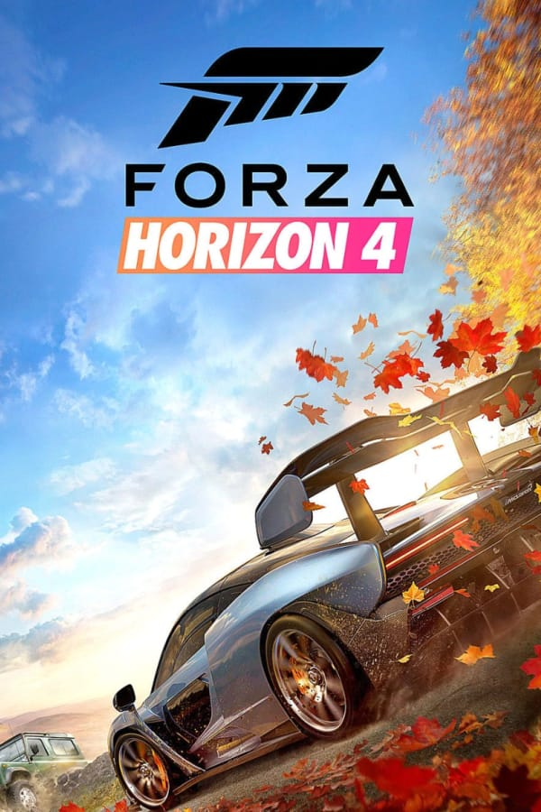
FORZA HORIZON
Gênero: Corrida.
Modos de jogo: Multijogador/on-line.
Lançamento: Setembro de 2018.
Desenvolvedor: Playground Games, Turn 10.
Descrição de jogo:
Novos gráficos com uma jogabilidade ultra realista que torna difícil saber se é real ou apenas um jogo, o objetivo deste jogo é tornar-se vitorioso vencendo a corrida antes dos demais adversários.
GTA V
Gênero: Ação e aventura.
Modos de jogo: Um jogador/on-line.
Lançamento: Setembro de 2013.
Desenvolvedor: Rockstar North.
Descrição de jogo:
Um ladrão de banco aposentado chamado Michael acaba fazendo um acordo com FIB, e então volta a sua antiga profissão. Com o acordo feito Michael chama seu melhor amigo Trevor que é cão de briga dele para juntar-se a ele, e para completar a equipe Franklin, um rapaz com um obscuro com habilidades de volante inigualáveis, mas nenhuma experiencia em crime.
DEVIL MAY CRY 5
Gênero: Ação e Aventura.
Modos de jogo: Um jogador.
Lançamento: Março de 2019.
Desenvolvedor: Capcom.
Descrição de jogo:
Nero e Dante se veem em uma nova ameaça, que está prestes a destruir o mundo e interligar o inferno com o mundo dos humanos. E para salvar o mundo Dante, Nero e seu novo Aliado V, precisam unir forças para salvar a humanidade mais uma vez.
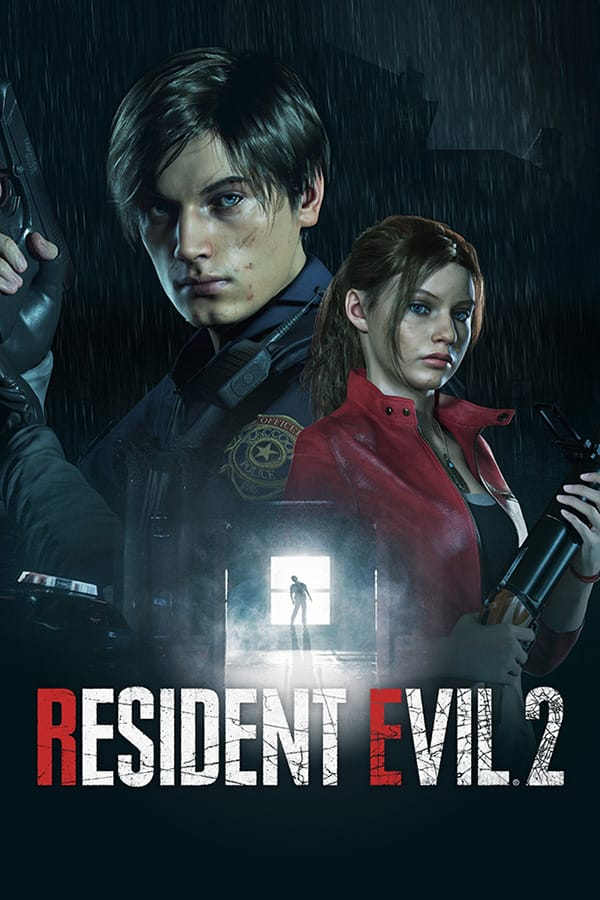
RESIDENT EVIL 2
Gênero: Tiro e terror.
Modos de jogo: Um jogador.
Lançamento: Janeiro de 2019.
Desenvolvedor: Capcom.
Descrição de jogo:
Após um apocalipse zumbi Leon e Claire tem a missão de fugir do caos de Raccoon City eliminando o maior número de ameaças possíveis em seu caminho.
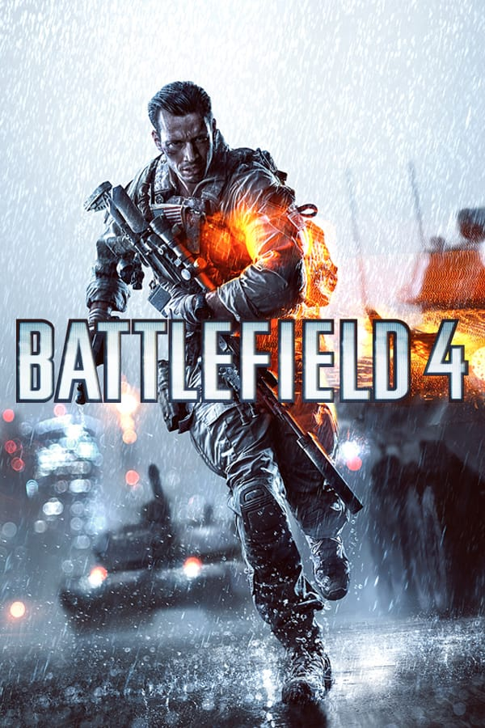
BATTLEFIELD 4
Gênero: Tiro e ação.
Modos de jogo: Multijogador/on-line.
Lançamento: Novembro de 2013.
Desenvolvedor: DICE.
Descrição de jogo:
Se passa em 2020, em meio a uma guerra na qual vários países fazem parte o objetivo do jogo e sobreviver e eliminar o maior número de adversários possíveis..
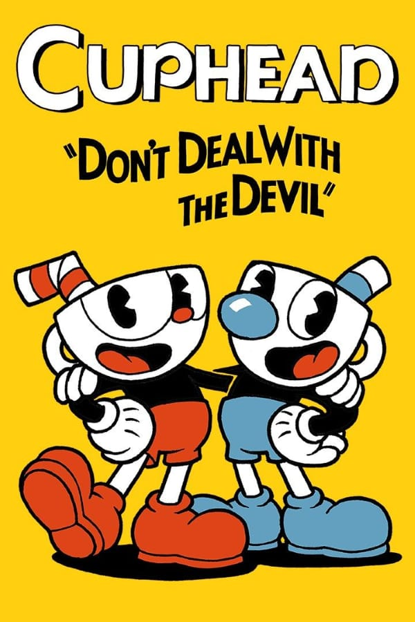
CUPHEAD
Gênero: Ação e aventura.
Modos de jogo: Multijogador.
Lançamento: setembro de 2017.
Desenvolvedor: Studio MDHR.
Descrição de jogo:
Cuphead e Mugman passam por diversas aventuras e fases complexas, em uma jogabilidade simples e gráficos inspirados em desenhos antigos extremamente agradável aos olhos e uma dinâmica de jogo caótica e divertida.
MINECRAFT
Gênero: Sobrevivencia.
Modos de jogo: Multijogador/on-line.
Lançamento: Novembro de 2011.
Desenvolvedor: Mojang Studios, Xbox Game Studios, Telltale Games, 4J Studios, Double Eleven, Other Ocean Interactive.
Descrição de jogo:
Sobreviver e construir projetos incríveis com blocos é o objetivo deste jogo. Ele lhe dá a liberdade para usar a imaginação e criar projetos surreais.
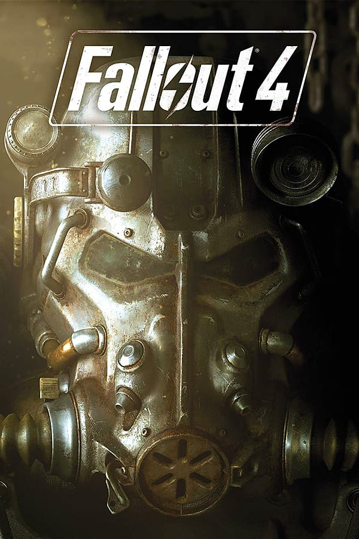
FALLOUT 4
Gênero: Ação e aventura.
Modos de jogo: Um jogador.
Lançamento: Novembro de 2015.
Desenvolvedor: Bethesda Softworks, Bethesda Game Studios.
Descrição de jogo:
Um jogo de RPG mundo aberto onde é dado a protagonista total poder de escolha, a história e final do personagem é criado pelo jogador.
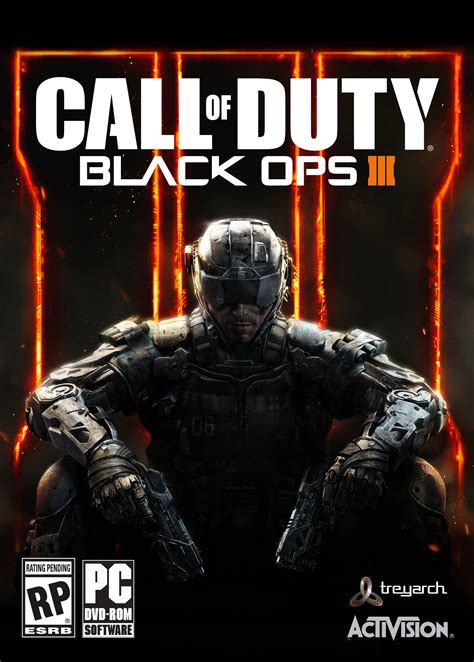
CALL OF DUTY BLACK OPS 4
Gênero: Tiro e ação.
Modos de jogo: Multijogador/on-line.
Lançamento: agosto de 2018.
Desenvolvedor: Treyarch, Raven Software, Beenox.
Descrição de jogo:
Diversos modos, um único objetivo, sobreviver. Modos de guerra com gráficos realistas e jogabilidade complexa onde é necessário habilidades e treino para eliminar o maior número de inimigos e permanecer vivo até o fim da partida.
Lara Croft é uma arqueóloga e sai em busca de uma relíquia na américa Latina, seu pai morreu e está relíquia tem uma ligação com ele, então Lara sai em uma aventura em busca do artefato Maia.
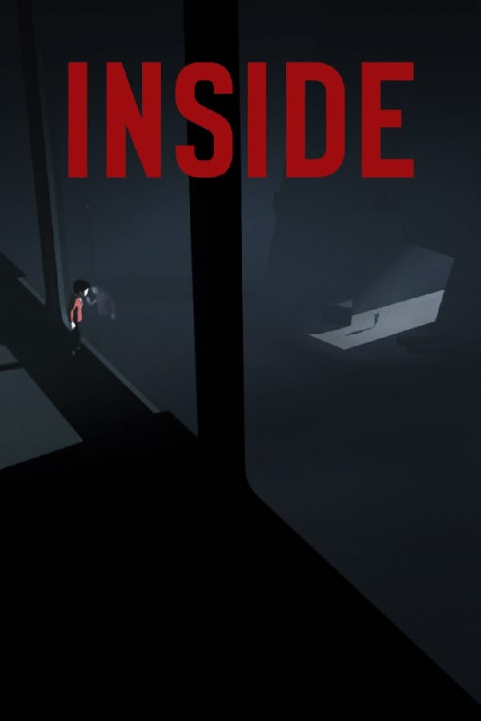
INSIDE
Gênero: Terror e suspense.
Modos de jogo: Um jogador.
Lançamento: Junho de 2016.
Desenvolvedor: Playdead.
Descrição de jogo:
Um menino luta por sua vida, através de experimentos em humanos o mal tenta encontrar e dominar o menino, seu objetivo é fugir.
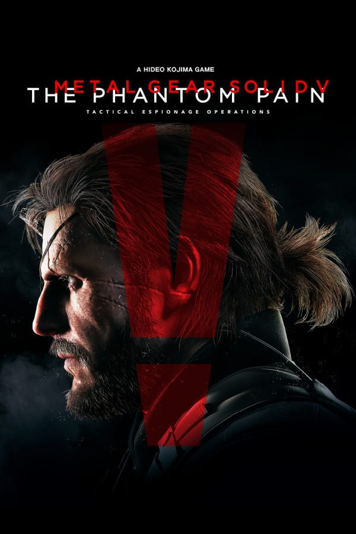
METAL GEAR SOLID 5
Gênero: Ãção e aventura.
Modos de jogo: Um jogador/on-line.
Lançamento: Setembro de 2015.
Desenvolvedor: Kojima Productions, Konami Digital Entertainment.
Descrição de jogo:
Após acordar do coma Snake vê que seus amigos precisam de sua ajuda pois os anos que ele esteve em coma muita coisa deu errado e apenas ele pode ajudar seus amigos.
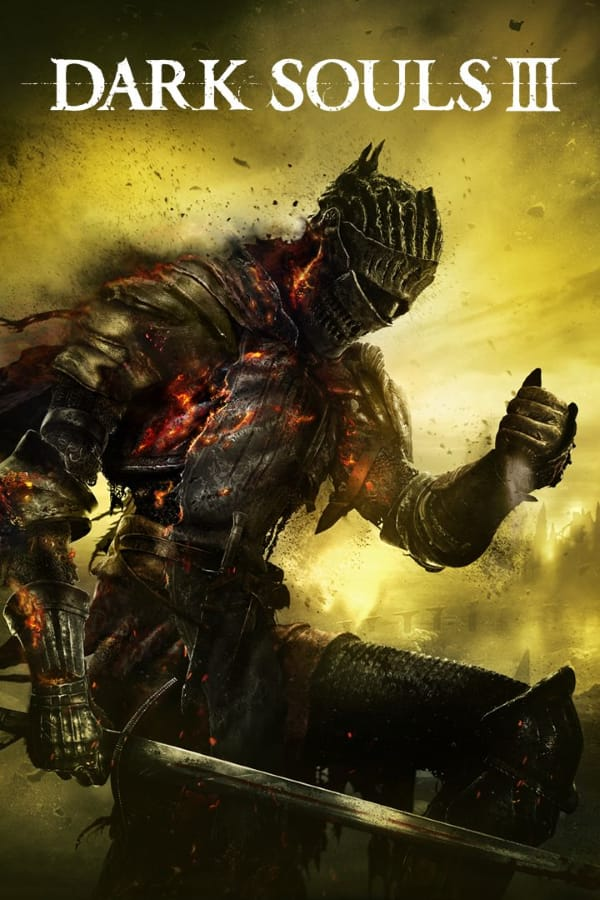
DARK SOULS 3
Gênero: RPG de ação.
Modos de jogo: Um jogador/on-line.
Lançamento: Março de 2016.
Desenvolvedor: FromSoftware.
Descrição de jogo:
Em um mundo caótico, sobreviver é o objetivo, para isso é necessário ir se aprimorando e utilizando de diversas armas para poder sobreviver e chegar ao final do jogo.
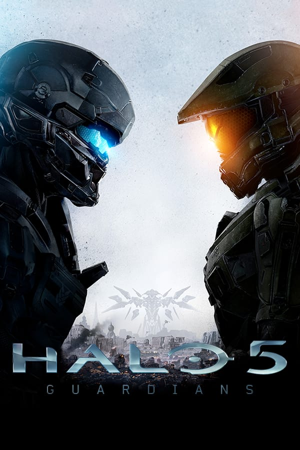
HALO 5: GUARDIANS
Gênero: tiro e ação.
Modos de jogo: multijogador/on-line.
Lançamento: outubro de 2015.
Desenvolvedor: 343 Industries.
Descrição de jogo:
Gráficos ultra realista uma jogabilidade inigualável, onde é necessário agilidade e atenção. A paz dos mundos acaba quando uma colônia decide atacar e é necessário aprimoramento de armadura e armas para ganhar a guerra.
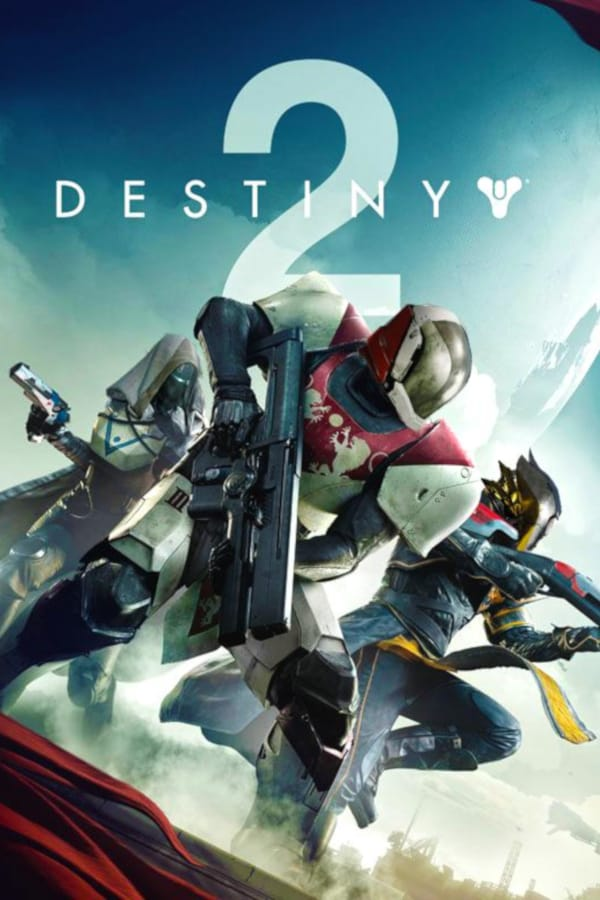
DESTINY 2
Gênero: Tiro e ação.
Modos de jogo: multijogador/on-line.
Lançamento: Setembro de 2017.
Desenvolvedor: Bungie.
Descrição de jogo
O objetivo é do jogo é ser um guardião e proteger as ultimas cidades existentes na terra, usando armas e armaduras e evoluindo para cumprir esta missão.